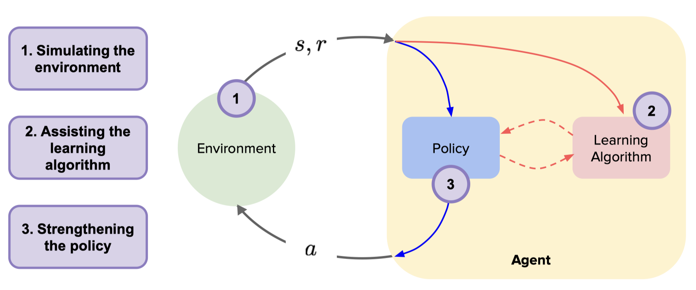

基于模型的强化学习¶
基于模型的强化学习 (Model-Based Reinforcement Learning, Model-Based RL) 是强化学习的一个重要分支，智能体通过与环境交互的信息学习一个环境动力学模型，然后利用该模型生成数据优化行动策略，或者利用模型进行规划。 基于模型的强化学习方法先是让智能体从与环境交互得到的数据中学习环境动力学模型，再利用环境模型可以产生大量虚拟样本，从而减少与真实环境的交互次数，因此可以天然地提高样本利用效率。
{kind=link}
环境模型一般可以从数学上抽象为状态转移函数 (transition function) 和奖励函数 (reward function)。 在学习得到环境模型后，理想情况下，智能体可以不与真实环境进行交互，而只在模拟的环境中，通过RL算法最大化累积折扣奖励，得到最优策略。
问题定义与研究动机¶
总的来说，Model-Based RL 研究的问题可以分为 2 类：一是如何学习精确的环境模型，二是如何利用环境模型进行策略优化。
如何构建精确的环境模型？
模型学习主要强调 Model-Based RL 算法对环境模型的构建过程。例如，
World Model 3 提出一种基于无监督学习的环境模型，并利用该模型实现从仿真到现实的任务迁移。
I2A 4 提出一种基于想象力增强 (imagination-augmented) 的模型结构，基于该模型预测未来轨迹，并且轨迹的信息会被编码用于辅助策略的学习。
但是 Model-Based RL 在模型学习部分也存在若干问题，例如，
环境模型会存在误差，而且随着算法与环境模型的迭代交互，累积误差越来越大，使得算法难以收敛到最优解。
环境模型缺乏通用性，每次换一个问题，就要重新建模。
如何利用环境模型做策略优化？
研究方向¶
对 Model-Based RL 近年论文做了整理，总结在 awesome-model-based-RL 1。 其中最为经典的 Model-Based RL 算法是 Dyna 类型强化学习，它是一类将 Model-Based RL 和 Model-Free RL 相结合的体系架构. 除了经典的 Dyna 类型强化学习外，基于模型的强化学习大致还有以下几大类:
基于模型的规划算法
基于模型的值拓展强化学习
结合模型梯度回传的策略优化
基于模型的规划算法¶
在学习到环境的动力学模型后, 可直接利用模型进行规划，这时强化学习可以转化为一个最优控制问题, 通过规划算法得到最优策略, 也可利用规划算法产生较好的样本辅助学习。 这类型算法中最常见的是交叉熵方法 (Cross Entropy Method, CEM)，它的思想是假设动作序列服从某个先验分布, 采样动作得到轨迹, 挑选好的轨迹对先验分布进行后验更新。
基于模型的规划算法在每次迭代中，大致分为三个步骤:
第一步，在执行某个动作后，根据环境动力学模型预测下一个状态。
第二步，利用 CEM 等算法求解动作序列。
第三步，执行第二步求解的第1个动作，如此反复进行。
这类典型算法有，RS 9, PETS 10, POPLIN 7。 但是当解决高维控制任务时，规划的难度和所需的计算就会大幅上升，而且规划效果会变差，因此适合于动作维度较低的简单模型。
基于模型的值拓展强化学习¶
基于模型的规划算法每次输入一个状态，需再次规划才能获取输出动作，而一个训练好的策略直接将状态映射为动作，实际应用中训练好的策略比规划算法更快。 而在 Model-Based 和 Model-Free 结合的模式下，模型误差会降低整个算法的性能。 MVE 11 通过使用环境模型 rollout 产生固定 H 步数的轨迹做值拓展 (Model-Based Value Expansion) 来估计值函数。 于是 Q 值的估计融合基于环境动力学模型的短期预估及基于目标 Q 值网络的长期预估，步数 H 限制复合误差的累积，提高 Q 值的准确性。
STEVE 12 指出 MVE 需要依赖调整展开 rollout 的步数 H，即在复杂环境中，模型展开步数 Ｈ 过大会引入较大误差，而简单环境步数中 Ｈ 过小又会减小 Ｑ 值的估计精度。 因此，STEVE 在不同环境中展开不同的特定步数，计算每步的不确定性，动态调整及整合不同步数之间 Q 值的权重，使得在每个环境任务下的 Q 值预测更加准确。
结合模型梯度回传的策略优化¶
除了利用模型虚拟展开生成数据外，如果模型是神经网络或其它可微函数，还可同时利用模型可微的特点直接辅助策略的学习，这种方法更进一步利用模型。
SVG 13 利用真实样本拟合模型，利用模型的可微性优化值函数，即利用链式法则和模型的可微性直接对值函数求导，用梯度上升法优化值函数，学习策略。 在优化过程中只利用真实样本，并未利用模型产生虚拟数据。 这样做的好处是可缓解模型不准确造成的影响，但同时由于不利用模型产生虚拟数据，样本效率并未得到较高提升。
MAAC 14 除了利用模型的梯度外，采用 H 步自举 (Bootstrapping) 的 Q 值函数作为强化学习的目标函数。 同时重放缓存区中的数据既有和真实环境交互的数据也有模型虚拟展开的数据，超参数 H 可使目标函数在模型的准确性和 Q 值函数的准确性之间权衡。 利用模型的可微性反向传播计算梯度可能会遇到深度学习中存在的一类问题，梯度消失和梯度爆炸。 MAAC 中采用终端 Q 函数 (Terminal Q-Function) 缓解此问题，SVG 13 和 Dreamer 15 在实现时使用梯度裁剪的技巧。 此外，利用模型的可微性在梯度优化时还可能陷入局部最优的问题。 2
未来展望¶
基于模型的强化学习具有较高的样本效率，但环境模型的训练过程往往时间代价较大，那么 “如何提高模型的学习效率” 就显得十分必要。
另外，由于环境模型缺乏通用性，经常每次换一个问题，就要重新建模。为了解决不同任务之间的模型泛化问题，”如何将迁移学习和元学习的思想与技巧引入到基于模型的强化学习中” 也是一个非常重要的研究问题。
基于模型的强化学习对高维图像观测上进行建模和决策，以及结合 Offline RL 的基于模型的强化学习，都将是未来强化学习通往 Sim2Real 的充分条件。
参考文献¶
- 1
Repo: awesome-model-based-RL. https://github.com/opendilab/awesome-model-based-RL
- 2
孙世光, 兰旭光, 张翰博, 郑南宁. 基于模型的机器人强化学习研究综述[J]. 模式识别与人工智能, 2022, 35(01): 1-16. DOI: 10.16451/j.cnki.issn1003-6059.202201001.
- 3
Ha D, Schmidhuber J. World models[J]. arXiv preprint arXiv:1803.10122, 2018.
- 4
Racanière S, Weber T, Reichert D, et al. Imagination-augmented agents for deep reinforcement learning[J]. Advances in neural information processing systems, 2017, 30.
- 5
Anthony T, Tian Z, Barber D. Thinking fast and slow with deep learning and tree search[J]. Advances in Neural Information Processing Systems, 2017, 30.
- 6
Silver D, Hubert T, Schrittwieser J, et al. Mastering chess and shogi by self-play with a general reinforcement learning algorithm[J]. arXiv preprint arXiv:1712.01815, 2017.
- 7(1,2)
Wang T, Ba J. Exploring Model-based Planning with Policy Networks[C]//International Conference on Learning Representations. 2019.
- 8
Pan F, He J, Tu D, et al. Trust the model when it is confident: Masked model-based actor-critic[J]. Advances in neural information processing systems, 2020, 33: 10537-10546.
- 9
Richards A G. Robust constrained model predictive control[D]. Massachusetts Institute of Technology, 2005.
- 10
Chua K, Calandra R, McAllister R, et al. Deep reinforcement learning in a handful of trials using probabilistic dynamics models[J]. Advances in neural information processing systems, 2018, 31.
- 11
Feinberg V, Wan A, Stoica I, et al. Model-based value estimation for efficient model-free reinforcement learning[J]. arXiv preprint arXiv:1803.00101, 2018.
- 12
Buckman J, Hafner D, Tucker G, et al. Sample-efficient reinforcement learning with stochastic ensemble value expansion[J]. Advances in neural information processing systems, 2018, 31.
- 13(1,2)
Heess N, Wayne G, Silver D, et al. Learning continuous control policies by stochastic value gradients[J]. Advances in neural information processing systems, 2015, 28.
- 14
Clavera I, Fu V, Abbeel P. Model-augmented actor-critic: Backpropagating through paths[J]. arXiv preprint arXiv:2005.08068, 2020.
- 15
Hafner D, Lillicrap T, Ba J, et al. Dream to control: Learning behaviors by latent imagination[J]. arXiv preprint arXiv:1912.01603, 2019.